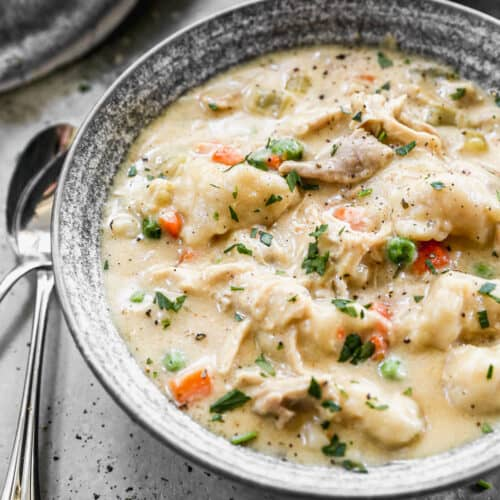

Chicken and Dumplings

Description
A classic comfort food, this homemade chicken and dumpling soup is hearty and full of vegetables. It's the perfect meal for a cold day.
Ingredients
- 2 tablespoons olive oil
- 2 celery ribs, diced
- 2 carrots, diced
- 1 yellow onion, chopped
- 1 clove garlic, minced
- 5 tablespoons unsalted butter
- 1/3 cup all-purpose flour
- 6 cups low sodium chicken broth
- 4 teaspoons chicken bouillon paste
- 1/4 teaspoon dried thyme
- 1/4 teaspoon dried sage
- 1/4 teaspoon dried rosemary
- 1 teaspoon kosher salt
- 1/2 teaspoon freshly ground black pepper
- 1 1/2 pounds boneless skinless chicken thighs
- 1/2 cup frozen peas
For the Dumplings
- 1 2/3 cups all-purpose flour
- 1 tablespoon baking powder
- 1/2 teaspoon kosher salt
- 3/4 cup milk
- 1/4 cup sour cream
- 2 tablespoons melted butter
Steps
- Heat a large pot over medium heat. Add oil. Once hot, add celery, carrots and onion and sauté for 3 minutes. Add garlic and sauté for 30 seconds. Add butter and flour and whisk well for 1 minute
- Gradually stir in the chicken broth and bouillon, scraping up anything stuck to the bottom of the pot. Add thyme, sage, rosemary, salt and pepper.
- Add chicken and bring mixture to a boil. Cover the pot with a lid, reduce heat and simmer for 10 minutes, or until chicken is cooked through. Remove chicken to a cutting board and rest for 5 minutes before chopping or shredding into small pieces. Return chicken to the pot and add evaporated milk and peas.
- Combine flour, baking powder, and salt in a bowl. Make a well in the center and add milk, sour cream and melted butter. Stir until combined, but don't over mix.
- Bring soup to a simmer and then use a small spoon to drop teaspoon-sized amounts of dough all over the top of the simmering soup (the dumplings will double in size as they cook).
- Cover the pot and simmer on low for 12-15 minutes. Remove lid, gently stir to break dumplings apart, and scoop out a dumpling to check for doneness. If still doughy, cover and cook for a few more minutes, until tender. Taste and adjust seasonings if desired.
- Serve warm.